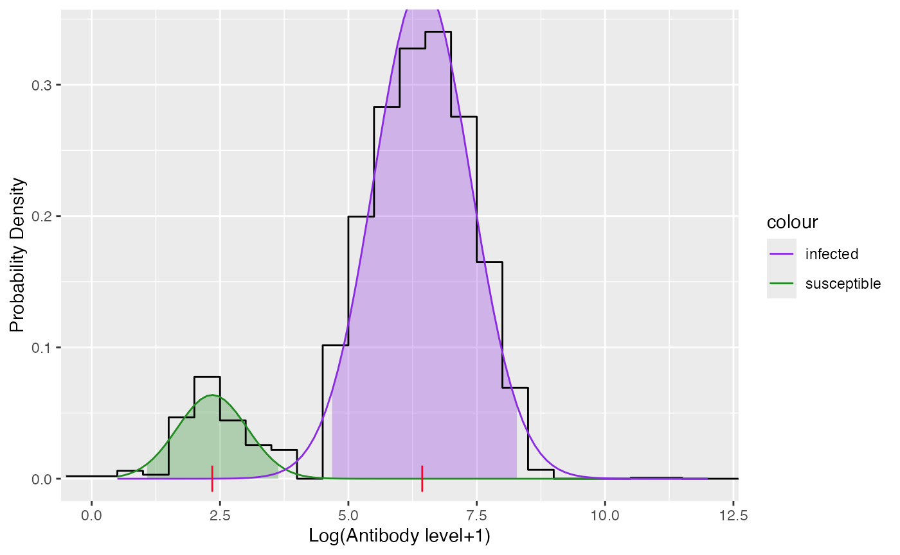
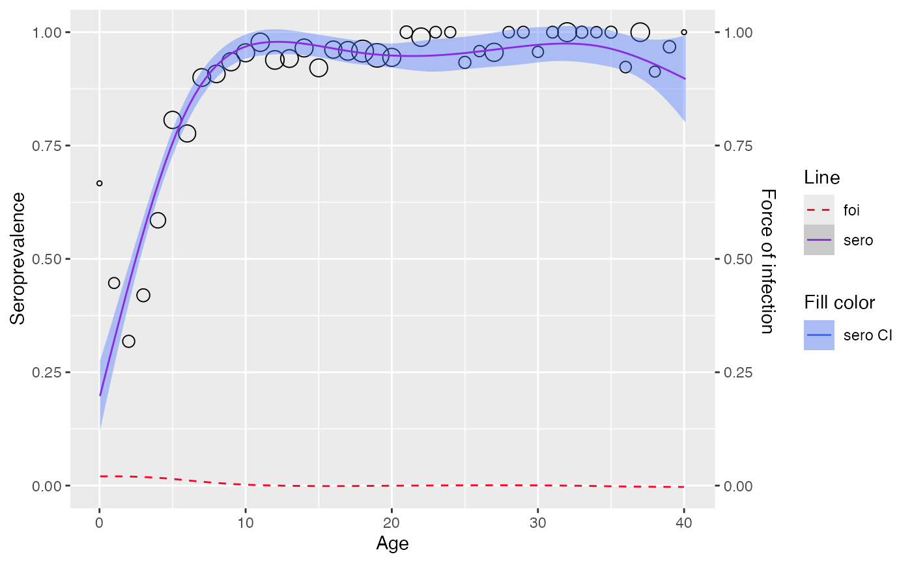

Modeling directly from antibody levels
Source:vignettes/model_quantitative_data.Rmd
model_quantitative_data.RmdMixture model
Proposed model
Consider a two-component Gaussian mixture model for the antibody level \(Z\), where each component \(Z_j\) represent antibody level arising from the 2 latent sub-populations \(j \in \{I, S\}\) (i.e., Infected and Susceptible groups).
Let \(f_j(z_j|\theta_j)\) denotes the density of component \(Z_j\), where \(\theta_I\) and \(\theta_S\) are the parameters for the Susceptible and Infected components respectively.
With \(\pi_{\text{TRUE}}(a)\) being the age-dependent mixing probability (i.e., the true prevalence), the density of the mixture is formulated as
\[ f(z|z_I, z_S,a) = (1-\pi_{\text{TRUE}}(a))f_S(z_S|\theta_S)+\pi_{\text{TRUE}}(a)f_I(z_I|\theta_I) \]
The age-specific mean antibody level \(E(Z|a)\) thus equals
\[ \mu(a) = (1-\pi_{\text{TRUE}}(a))\mu_S+\pi_{\text{TRUE}}(a)\mu_I\]
From which the true prevalence can be calculated by
\[ \pi_{\text{TRUE}}(a) = \frac{\mu(a) - \mu_S}{\mu_I - \mu_S} \]
Force of infection can then be inferred by
\[ \lambda_{TRUE} = \frac{\mu'(a)}{\mu_I - \mu(a)} \]
Refer to Chapter 11.3 of the book by Hens et al. (2012) for a more detailed
explanation of the method.
Fitting data
General workflow:
Step 1: Fit the antibody level data to a 2-component mixture model
Step 2: From the fitted mixture model, estimate the seroprevalence and FOI
To fit the antibody data, use mixture_model function
df <- vzv_be_2001_2003[vzv_be_2001_2003$age < 40.5,]
data <- df$VZVmIUml
model <- mixture_model(antibody_level = data)
print(model)
#> Mixture model
#>
#> Estimated proportion:
#> Susceptible=0.1088, Infected=0.8912
#>
#> Estimated mean Log(Antibody):
#> Susceptible=2.349, Infected=6.439
plot(model)
sero-prevalence and FOI can then be esimated using function
estimate_from_mixture
est_mixture <- estimate_from_mixture(df$age, data, mixture_model = model, threshold_status = df$seropositive, sp=83, monotonize = FALSE)
est_mixture
#> Age-varying seroprevalence estimated from mixture model
#>
#> Monotonized seroprevalence: FALSE
#> Family: gaussian
#> Link function: identity
#>
#> Formula:
#> log_antibody ~ s(age, bs = s, sp = sp)
#>
#> Estimated degrees of freedom:
#> 5.13 total = 6.13
#>
#> GCV score: 2.056333
plot(est_mixture)